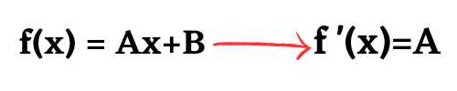
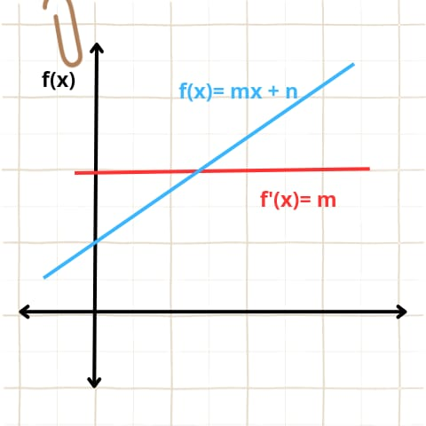
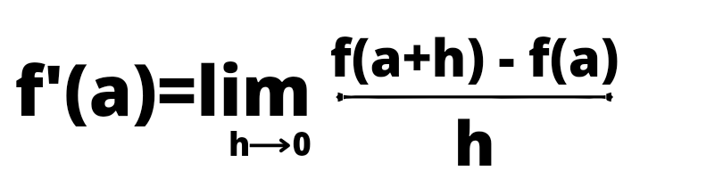
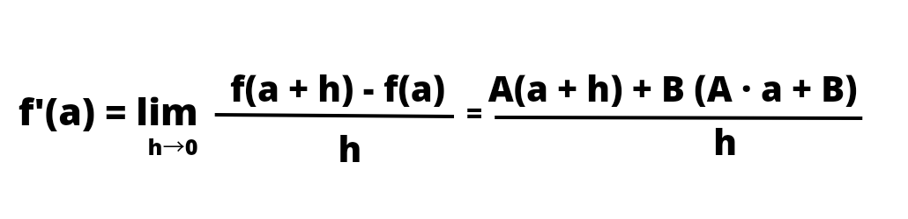
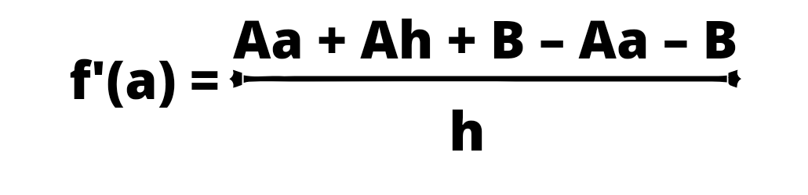
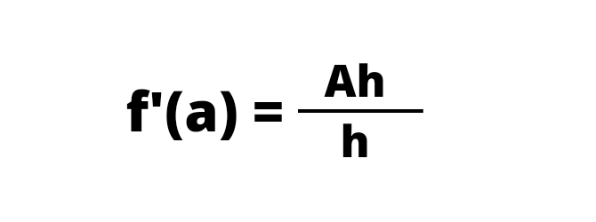

Derivadas de una función lineal
La derivada de una función lineal es el coeficiente del término de primer grado, es decir, la derivada de una función lineal f(x)=Ax+B es igual a A.

El término independiente se elimina de la derivada porque la derivada de una constante es igual a cero. Y, por otro lado, la derivada de un término de primer grado es el coeficiente de dicho término. Por lo que la derivada de la suma de estos dos tipos de funciones es el coeficiente del término lineal.

Geométricamente, la derivada de una función lineal es la pendiente de dicha función. En la gráfica anterior puedes ver representadas una función lineal junto con su derivada.
A continuación, vamos a demostrar la fórmula de la derivada de una función lineal.
Sea f una función lineal cualquiera:
La fórmula para calcular de la derivada de una función en un punto es:
De manera que si calculamos el límite anterior para una función lineal obtenemos:
Resolvemos el paréntesis:
Operamos en el numerador:
Operamos en el numerador:
En conclusión, la derivada de una función lineal es igual al coeficiente del término de primer grado en cualquier punto. Así pues, queda demostrada la fórmula de la derivada de una función lineal.